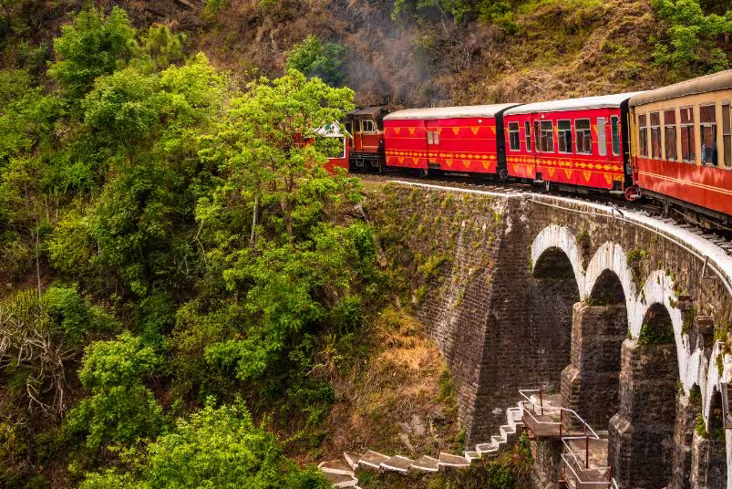
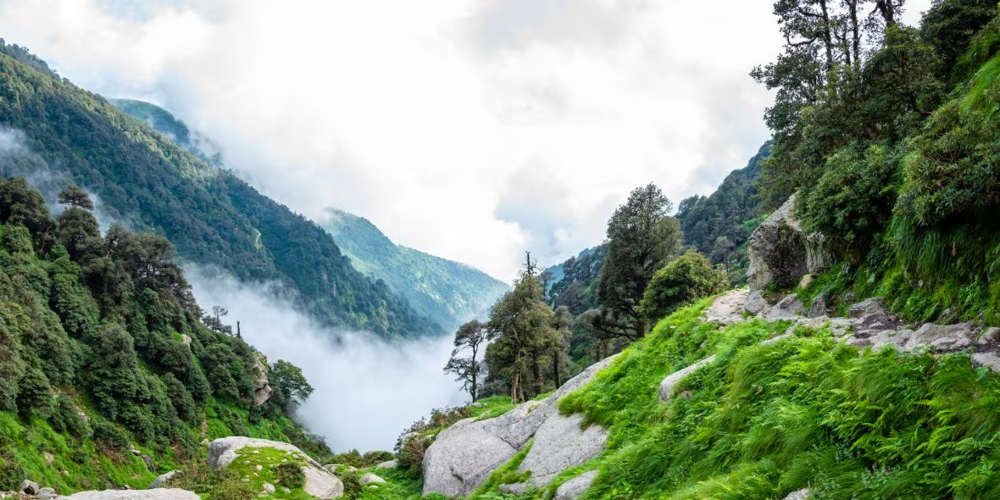
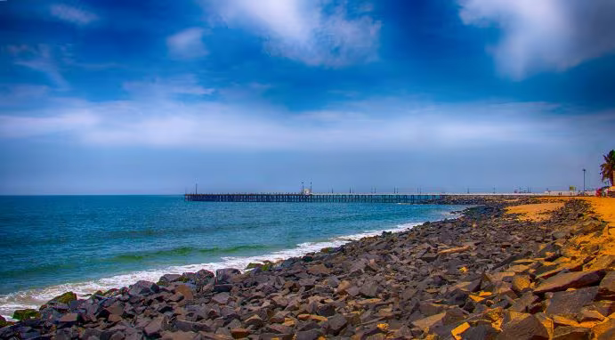

Shimla

Manali

Goa

Ladakh

Dharamshala

Pondicherry
The Land Of Diversity
India, a vast and diverse country, is a melting pot of cultures, traditions, and history. With a rich
cultural tapestry dating back thousands of years, India is known for its vibrant festivals, traditional
dances, and a kaleidoscope of languages spoken across its regions. The country's cultural heritage is deeply
rooted in art, literature, and spirituality, with iconic landmarks like the Taj Mahal representing
architectural marvels.
India's tourism landscape is as varied as its culture, offering an array of destinations for every traveler.
The Taj Mahal in Agra, a UNESCO World Heritage Site, stands as a symbol of eternal love and architectural
brilliance. The bustling streets of Delhi showcase a blend of ancient history and modernity. The serene
backwaters of Kerala provide a tranquil escape, while the vibrant cities of Mumbai and Bangalore pulsate
with energy.
Hospitality in India is ingrained in its culture, with the concept of "Atithi Devo Bhava" (Guest is God)
being a guiding principle. Visitors are often welcomed with warmth, and the diversity in hospitality
experiences ranges from luxurious palace stays in Rajasthan to humble homestays in the Himalayas. Indian
cuisine, renowned globally for its flavors and spices, adds a delightful dimension to the hospitality
experience. Each region boasts its own culinary specialties, from the spicy curries of the North to the
coconut-infused dishes of the South.

Hydrabad cuisine
Punjabi
cuisine
North Indian cuisine
South Indian cuisine
Kerala
cuisine
Bengali
cuisine
Rajasthani
cuisine
Vande Bharat Express, also known as Train 18, is a symbol of India's technological prowess and commitment to
modernizing its railways. Launched in 2019, this high-speed train offers a seamless and comfortable travel
experience for both domestic and international tourists exploring the diverse landscapes of India. With its
cutting-edge amenities, including Wi-Fi, infotainment systems, and ergonomic seating, Vande Bharat ensures a
smooth and enjoyable journey, making it an ideal choice for tourists keen on exploring the vast and
culturally rich tapestry of the country.
Indian Railways, on the other hand, is a lifeline that crisscrosses the entire nation, connecting remote
villages to bustling cities. This extensive rail network serves as a gateway for tourists to delve into the
heart of India, providing an affordable and efficient mode of transportation. The diverse routes offered by
Indian Railways allow travelers to witness the scenic beauty, cultural vibrancy, and historical richness of
the subcontinent.
Tourists can embark on a mesmerizing journey, from the picturesque landscapes of Himachal Pradesh to the
vibrant markets of Rajasthan, all while comfortably seated in the train compartments. Indian Railways not
only facilitates travel but also serves as a cultural bridge, allowing tourists to interact with locals and
experience the warmth and hospitality that define Indian communities.
The integration of Vande Bharat Express with the vast Indian Railways network amplifies the accessibility
for tourists, enabling them to cover longer distances in shorter durations. This synergy between modernity
and tradition ensures that tourists can explore the depth and diversity of India with ease and convenience.

Indian airports and airline services play a pivotal role in facilitating tourism and providing a gateway to
the diverse wonders of the country. With a rapidly growing aviation sector, India boasts modern airports
equipped with state-of-the-art facilities, enhancing the overall travel experience for tourists.
Major airports such as Indira Gandhi International Airport in Delhi, Chhatrapati Shivaji Maharaj
International Airport in Mumbai, and Kempegowda International Airport in Bangalore are not only
well-connected globally but also showcase India's commitment to providing world-class infrastructure. These
airports serve as crucial hubs for international tourists, offering seamless connectivity to various
destinations across the country.
The airline services operating in India, both domestic and international, contribute significantly to the
convenience and efficiency of travel. Domestic airlines like IndiGo, SpiceJet, and Air India, alongside
international carriers, ensure a wide network of routes, allowing tourists to explore India's geographical
and cultural diversity. The availability of budget airlines also makes air travel more accessible for a
broader spectrum of travelers.
The well-established airline services and airports provide a time-efficient mode of transportation, enabling
tourists to cover vast distances swiftly. This is particularly beneficial for those looking to explore
different regions of India within a limited timeframe. Additionally, the provision of online booking
platforms, user-friendly interfaces, and multilingual services enhances accessibility for international
tourists.

India's road transport network is like a vast and intricate tapestry that weaves through the diverse
landscapes of the country, making it an ideal way for tourists to explore its beauty. The road
infrastructure in India has come a long way, connecting bustling cities, serene rural areas, and
breathtaking natural wonders.
One of the key features of India's road transport is the extensive network of national and state highways
that crisscross the entire nation. These well-maintained roads make it convenient for tourists to travel
between major cities and popular tourist destinations. The famous Golden Quadrilateral, connecting Delhi,
Mumbai, Chennai, and Kolkata, has played a significant role in enhancing connectivity and easing travel.
For those who seek a more immersive and adventurous experience, India offers a plethora of scenic routes.
The mountainous roads of Himachal Pradesh and Uttarakhand provide stunning views of the Himalayas, while the
coastal roads in Goa and Kerala offer a refreshing breeze and panoramic ocean views.
Tourists can choose from various modes of road transport, including buses, taxis, and rental cars. State-run
buses and private operators cover extensive routes, making it accessible for travelers with different budget
preferences. Taxis and car rentals provide a more personalized and flexible experience, allowing tourists to
explore off-the-beaten-path locations at their own pace.